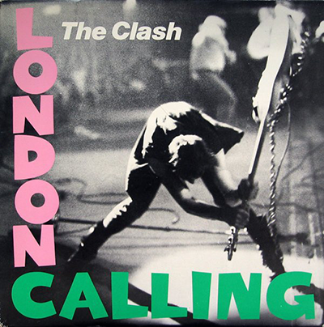

Train in Vain Video
London Calling

London Calling is the third studio album by English rock band the Clash. It was originally released as a double album in the United Kingdom on 14 December 1979 by CBS Records, and in the United States in January 1980 by Epic Records.
Side One
- London calling (3:18)
- Brand new Cadillac (2:09)
- Jimmy Jazz (3:52)
- Hateful (2:47)
- Rudie can't fail (3:27)
Side Two
- Spanish bombs (3:18)
- The right profile (3:53)
- Lost in the supermarket (3:47)
- Clampdown (3:50)
- The guns of Brixton (3:12)
Side Three
- Wrong 'em boyo (3:10)
- Death or glory (3:55)
- Koka kola (1:49)
- The card cheat (3:50)
Side Four
- Lover's rock (4:01)
- Four horsemen (3:00)
- I'm not down (3:00)
- Revolution rock (5:36)
- Train in vain (3:10)